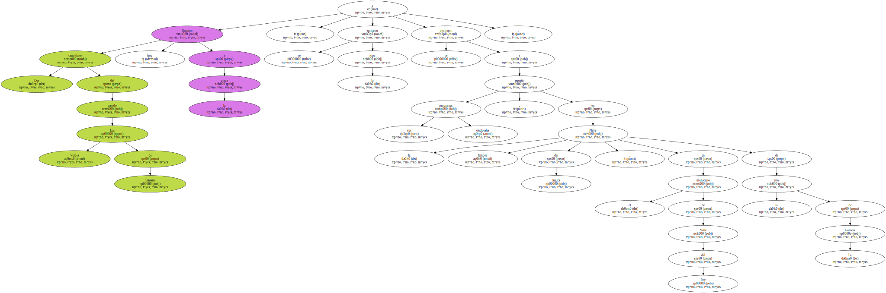
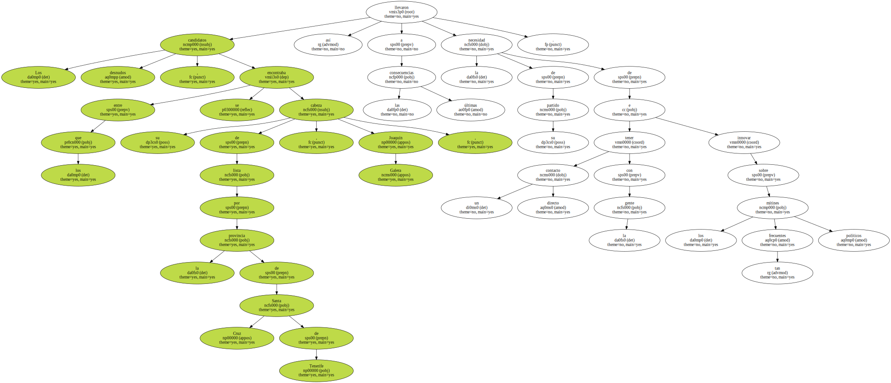
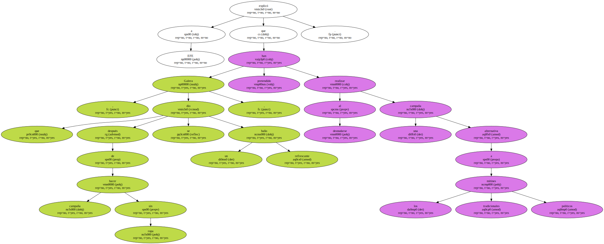

Dos candidatos del partido Los Verdes de Canarias llegaron hoy a la playa , se quitaron la ropa y se dedicaron a repartir sus programas electorales , en la famosa Playa del Inglés , en el municipio de Valle del Rey de la isla de La Gomera.
Los desnudos candidatos , entre los que se encontraba su cabeza de lista por la provincia de Santa Cruz de Tenerife , Joaquín Galera , llevaron así a las últimas consecuencias la necesidad de su partido de tener un contacto directo con la gente e innovar sobre los tan frecuentes mítines políticos.
En la zona nudista de esta playa de La Gomera , los bañistas pudieron disfrutar no solo de sus baños de sol y mar , sino también de las propuestas políticas de Los Verdes con las que el partido quiere concienciar a sus habitantes de la necesidad de proteger el medio ambiente.

Galera , que después de hacer campaña sin ropa se dio un baño refrescante , explicó a EFE que al desnudarse han pretendido realizar una campaña alternativa a los tradicionales mítines políticos.
